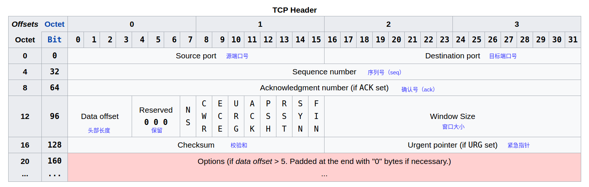
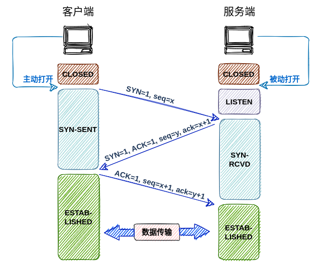
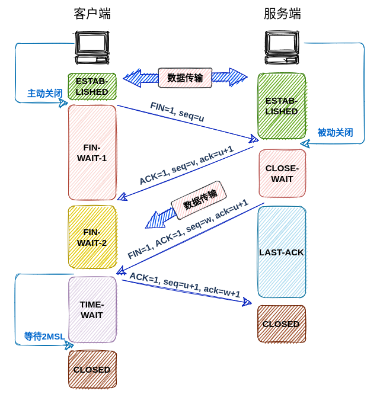

TCP三次握手和四次挥手
定义：TCP（Transmission Control Protocol:传输控制协议）是一种面向连接的、可靠的、基于字节流的传输层通信协议.
TCP在发送数据前，会在通信双方之间建立一条连接。通过这条连接，客户端和服务端可以保存一份对方的信息，如ip地址、端口号等。通信双方的数据传输就是在这条连接上进行的。这条连接的建立和断开的过程就是所谓的三次握手和四次挥手
TCP报文头部数据
在了解三次握手和四次挥手之前，先来了解一下TCP报文的头部数据结构

上图中有几个字段是在
三次握手和四次挥手需要的
- Sequence number（seq）：序列号 32位
- Acknowledgment number（ack）: 确认序列号 32位
- SYN、ACK、FIN标志位
- SYN : 建立起一个新的连接
- ACK ： 确认号有效
- FIN ： 释放一个连接
注意： 不要将ack和ACK理解混了，ack是一串序列号，ACK是一个标志位。当ACK为1时，代表ack序列号有效
三次握手
三次握手是TCP建立连接的过程。主要作用是判断通信双方有没有传输数据的能力。看一下整个握手的过程。

三次握手步骤：
第一次握手：客户端主动向服务端发起一个建立连接的请求。请求数据中SYN=1表示客户端要与服务端建立一个新的连接- 初始自己的序列号值
seq=x
此时客户端进入到
SYN-SENT状态等待服务器的回复第二次握手：服务端收到客户端的请求后，发现SYN=1，知道这是要建立一个连接，于是向客户端发送一个回复消息- 初始自己序列号值
seq=y ACK=1表示确认收到了消息SYN=1表示同意了这次连接，并与客户端建立新连接ack=x+1客户端发过来的序列号+1
此时服务器进入到
SYN-RCVD状态- 初始自己序列号值
第三次握手：客户端收到服务端的回复后，发现SYN=1``ACK=1``ack=x+1表示服务端已经收到第一次握手时客户端发送的请求，并同意建立连接，这时，客户端回复一个确认消息ACK=1表示确认收到了消息、seq=x+1表示客户端第一次握手x序列号的下一个序列号ack=y+1表示收到了服务端发动过来的seq=y的消息
此时客户端进入到
ESTAB-LISHED状态，在服务端收到消息后也进入到ESTAB-LISHED状态。
OK，三次握手完毕，通信双方可以传输数据了
四次挥手
四次挥手是TCP断开的过程，主要的作用是确保数据已传输完毕，并断开连接，看一下四次挥手的过程

四次挥手步骤
第一次挥手：客户端主动向服务端发送发断开请求FIN=1表示释放连接seq=u客户端当前的序列号
此时客户端进入到
FIN-WAIT-1状态第二次挥手：服务端收到客户端发来的请求后，发现FIN=1，知道了这是一个断开请求，然后给客户端发送一个确认请求ACK=1表示确认收到了客户端释放连接的请求seq=u服务器当前的序列号ack=u+1表示服务端收到客户端发来的seq=u的断开请求
此时服务区进入到
CLOSE-WAIT状态，并且不会立即进行第三次挥手，因为这时数据可能还没有传输完成，需要再等待一段时间。
客户端在接受到回复后进入到FIN-WAIT-2状态第三次挥手：当服务端发送完所有的数据后，主动向客户端发送断开请求FIN=1表示释放连接ACK=1、seq=u、ack=u+1和上一次一样
此时服务端进入到
LAST-ACK状态等待客户端回复第四次挥手：客户端收到服务端发来的关闭请求后，向服务端发出确认报文，并进入到TIME-WAIT状态。服务端接受到确认报文后，断开连接，而客户端要等2MSL(最长报文段寿命的2倍时长)后才断开连接，所以服务端结束的时间要比客户端早一些。
常见问题
为什么是3次握手，2次不行么？
如果是2次握手，假设在第二次握手的时候服务端发送给客户端的消息丢失了，那么这时服务端进入到ESTAB-LISHED状态，准备接收数据了。但是客户端却不知道服务端已经准备好了。那么客户端也不会给服务端发送数据。
而3次握手多了向服务端最后确认阶段，这样就可以确保客户端已经知道服务端已经准备好了。
为什么建立连接的时候是3次，断开连接时是4次？
主要的作用还是确保所有数据已经传输完，第一次挥手客户端主动向服务端发送断开请求表示客户端数据已经传输完毕，第三次挥手服务端主动向客户端发送断开请求表示服务端数据也传输完毕。
第四次挥手后为什么要等2MSL的时间才断开连接？
主要是防止第四次挥手客户端的请求丢失，服务端没有接收到客户端最后的确认请求，那么服务端再发送一次第三次挥手的数据，再加上客户端回复确认消息的时间，所以要等待2MSL
建立连接以后，客户端出现故障怎么办？
TCP有一个保活机制：
在一个时间段内，如果连接没有任何的活动，保活机制会起作用，每隔一个时间间隔，会发送一个报文，如果连续几个报文都没有得到响应，就会认为TCP连接已经死亡，这时系统内核会将错误信息通知给上层应用
什么是SYN攻击？，如何避免？
基于第一次握手时，服务器会进入SYN_RCVD状态。攻击者在短时间内伪造不同 IP 地址的 SYN 报文，服务端每接收到一个 SYN 报文，就进入SYN_RCVD 状态，但服务端发送出去的 ACK + SYN 报文，无法得到未知 IP 主机的 ACK 应答，久而久之就会占满服务端的 SYN 接收队列（未连接队列），使得服务器不能为正常用户服务。
这本身是TCP设计的原因，SYN攻击不能完全的避免，只能尽可能减少SYN的危害，常见预防方式：
- 缩短超时（SYN Timeout）时间
- 增加最大半连接数
- 过滤网关防护
- SYN cookies技术